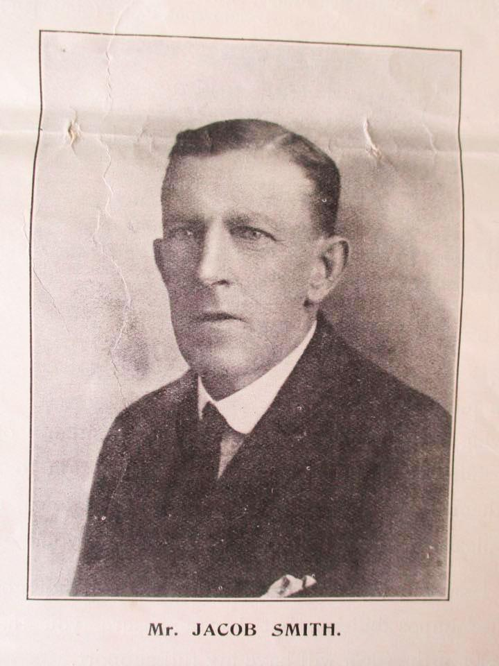
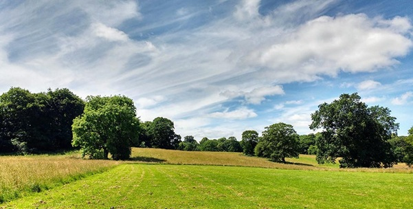

Winifred Jacob Smith MBE entered the world on 4th August 1911, the daughter of Dora and Jacob Smith. Jacob was a farmer, descended from generations who had farmed since 1710 at Humberton between Knaresborough and Boroughbridge. This included Newby Hall Estate at Givendale, and at Burton Grange, Humberton.

Winifred, her mother Dora and her sister Dorothy.

Jacob Smith, Winifred and Dorothy’s father.
It was traditional for the first son of each succeeding generation of the Smith family to be given the name Jacob. However, the last of the line were daughters (Winifred’s sister Dorothy was born the year before her, 18 May 1910) so their father adopted the name Jacob in their surname so the tradition could live on.
Circa 1920 (after WW1) Jacob Smith and his family moved to Knaresborough and took over Park Corner Farm, Scriven. As well as playing an active role in the family’s very successful farming business, including being qualified in butter and cheese making, Dora Smith was president of the Knaresborough Women’s Institute (WI). Both her daughters took a very active role. All three were strong, practical-minded women who held their close-knit family very dear. Winifred and Dorothy published a book of local recipes to raise funds for the parish church, supported by local business advertising in 1938.

A milk carton from the family’s Park Corner dairy.

Winifred and Dorothy during their Women’s Land Army service.
In September 1939 both Winifred and Dorothy joined the Women’s Land Army (WLA). Winifred is soon selected to attend a royal reception hosted by the Queen. She served as organiser of the WLA in North Yorkshire, prioritising the welfare of land girls across hostels and farm billets (around 80). She kept unique diaries and worked from the family home, Somerley, on Boroughbridge Road. Winifred was later appointed organiser of the WLA for all of Yorkshire.
In December 1941 Jacob Smith died, aged 74. Winifred and Dorothy inherited the family home and ran the dairy enterprise at Park Corner Farm, including a herd of award winning pedigree Ayrshire cattle.

The sisters kept a herd of award-winning pedigree Ayrshire cattle. Credit: ACS.

Winifred Jacob Smith MBE. Credit: Yorkshire Farming Museum.
In February 1951 Winifred was awarded the MBE for her WLA work and received the honour from King George VI at Buckingham Palace, accompanied by Dorothy and Dora.
In 1955-56, after the estate was sold, Winifred and Dorothy purchased the 30 acres of farmland, Scriven Park, adjacent to Park Corner Farm, which they had previously leased from the Slingsbys, to graze their cattle.

Somerley, the family home on Boroughbridge Road. Photo: Richard Hutchings.

The family grave at All Saints’ Church, Kirby Hill.
Dora Smith died on 2nd May 1974, aged 100.
Dorothy Smith died on 26th April 1984, aged 73.
Winifred Jacob Smith MBE died on 23rd May 2003, aged 91. She is buried with her sister and parents at All Saints’ Church, Kirby Hill. WLA memorabilia from Somerley is donated to Yorkshire Farming Museum for permanent display.
Following the death of Winifred, the land now known as Jacob Smith Park was bequeathed to Harrogate Borough Council to be used as a public park. The park was officially opened to the public on 11 January 2008.

The park today — open to everyone, as Winifred intended.